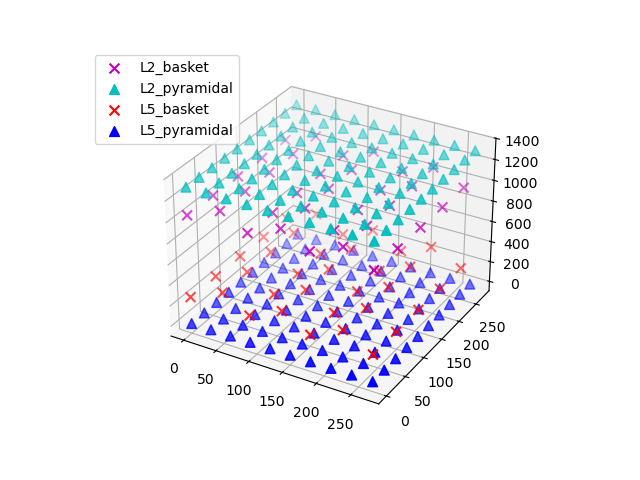

Note
Click here to download the full example code or to run this example in your browser via Binder
02. Record extracellular potentials¶
The main output of HNN simulations is the ‘dipole’ waveform, i.e., the net intracellular current flowing in pyramidal cell apical dendrites. At the large distances between cells and M/EEG sensors, this ‘primary’ current is the main contributor to the measured fields. Close to the cells, the local field potential (LFP) is the result of intracellular current leaking into the extracellular medium through active and passive membrane channels. Under some simplifying assumptions, we may approximate the LFP at virtual electrodes placed in and around the HNN network model.
# Authors: Christopher Bailey <cjb@cfin.au.dk>
# Mainak Jas <mainakjas@gmail.com>
# Nick Tolley <nicholas_tolley@brown.edu>
# sphinx_gallery_thumbnail_number = 3
import matplotlib.pyplot as plt
from hnn_core import jones_2009_model, simulate_dipole
from hnn_core.network_models import add_erp_drives_to_jones_model
The default network model defined in Jones et al. (2009) 1 consists of a square grid of pyramidal cells. The in-plane distance between pyramidal cell somas on the grid can be set by the user, which will have an influence on the extracellular potentials (but not on the calculated net intracellular dipole moment). In this example, we’ll simulate a network of model cells spaced 30 um apart. To drive the network dynamics, we’ll use three evoked ‘ERP’ drives; see the event-related potential (ERP) example for details.
net = jones_2009_model()
add_erp_drives_to_jones_model(net)
net.set_cell_positions(inplane_distance=30.)
Extracellular recordings require specifying the electrode postions. It can be useful to visualize the cells of the network to decide on the placement of each electrode.
<Figure size 640x480 with 1 Axes>
The default network consists of 2 layers (L2 and L5), within which the cell
somas are arranged in a regular grid, and apical dendrites are aligned along
the z-axis. We can simulate a linear multielectrode array with 100 um
intercontact spacing 2 by specifying a list of (x, y, z) coordinate
triplets. The L5 pyramidal cell somas are at z=0 um, with apical dendrites
extending up to z~2000 um. L2 pyramidal cell somas reside at
z~1300 um, and have apical dendrites extending to z~2300 um. We’ll place the
recording array in the center of the network. By default, a value of
0.3 S/m is used for the constant extracellular conductivity and the
‘point source approximation’ for calculations; see
hnn_core.Network.add_electrode_array() for details.
depths = list(range(-325, 2150, 100))
electrode_pos = [(135, 135, dep) for dep in depths]
net.add_electrode_array('shank1', electrode_pos)
The electrode arrays are stored under Network.rec_arrays as a dictionary
of hnn_core.extracellular.ElectrodeArray objects that are now
attached to the network and will be recorded during the simulation. Note that
calculating the extracellular potentials requires additional computational
resources and will thus slightly slow down the simulation.
Using MPI will
speed up computation considerably.
print(net.rec_arrays)
net.plot_cells()
dpl = simulate_dipole(net, tstop=170)
{'shank1': <ExtracellularArray | 25 electrodes, conductivity=0.3, method=psa (no data recorded yet)>}
joblib will run over 1 jobs
Building the NEURON model
[Done]
running trial 1 on 1 cores
Simulation time: 0.03 ms...
Simulation time: 10.0 ms...
Simulation time: 20.0 ms...
Simulation time: 30.0 ms...
Simulation time: 40.0 ms...
Simulation time: 50.0 ms...
Simulation time: 60.0 ms...
Simulation time: 70.0 ms...
Simulation time: 80.0 ms...
Simulation time: 90.0 ms...
Simulation time: 100.0 ms...
Simulation time: 110.0 ms...
Simulation time: 120.0 ms...
Simulation time: 130.0 ms...
Simulation time: 140.0 ms...
Simulation time: 150.0 ms...
Simulation time: 160.0 ms...
For plotting both aggregate dipole moment and LFP traces, we’ll use a 10 ms smoothing window, after which both data can be decimated by a factor of 20 from 40 to 2 kHz sampling rates (note that decimation is applied in two steps). Decimation speeds up plotting significantly.
trial_idx = 0
window_len = 10 # ms
decimate = [5, 4] # from 40k to 8k to 2k
fig, axs = plt.subplots(3, 1, sharex=True, figsize=(6, 8),
gridspec_kw={'height_ratios': [1, 3, 2]})
# Then plot the aggregate dipole time series on its own axis
dpl[trial_idx].copy().smooth(
window_len=window_len).plot(ax=axs[0], decim=decimate,
show=False)
voltage_offset = 50 # the spacing between individual traces
voltage_scalebar = 200 # can be different from offset
# we can assign each electrode a unique color using a linear colormap
colors = plt.get_cmap('cividis', len(electrode_pos))
# use the same smoothing window on the LFP traces to allow comparison to dipole
net.rec_arrays['shank1'][trial_idx].smooth(window_len=window_len).plot(
ax=axs[1], contact_labels=depths, color=colors, decim=decimate, show=False,
voltage_offset=voltage_offset, voltage_scalebar=voltage_scalebar)
axs[1].grid(True, which='major', axis='x')
axs[1].set_xlabel('')
# Finally, add the spike raster to the bottom subplot
net.cell_response.plot_spikes_raster(ax=axs[2], show=False)
plt.tight_layout()
plt.show()
References¶
- 1
Jones, S. R. et al. Quantitative analysis and biophysically realistic neural modeling of the MEG mu rhythm: rhythmogenesis and modulation of sensory-evoked responses. J. Neurophysiol. 102, 3554–3572 (2009).
- 2
Kajikawa, Y. & Schroeder, C. E. How local is the local field potential? Neuron 72, 847–858 (2011).
Total running time of the script: ( 1 minutes 2.018 seconds)